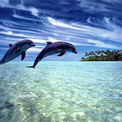
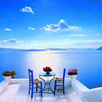

Делфини

Делфини плуват в синьото море.
Делфините са морски бозайници като китовете, кашалотите, косатките. Дишат с бял дроб като хората, а не с хриле като рибите. Делфините не хвърлят хайвер като рибите, а раждат делфинчетата, както жените раждат бебетата и също като тях ги кърмят. Новороденото делфинче е дълго около един метър. Възрастните делфини са дълги около 4 метра, живеят до около 40 години.
Пейзаж в Санторини

Морски залез над Санторини.
Гръцкият остров Санторини (Σαντορίνη, Santorini) официално е познат като Тера. Този уникален по рода си вулканичен остров годишно се посещава от огромен брой туристи, които се наслаждават на гледката на подводната калдера, епицентър на едно от най-големите вулканични изригвания в историята.